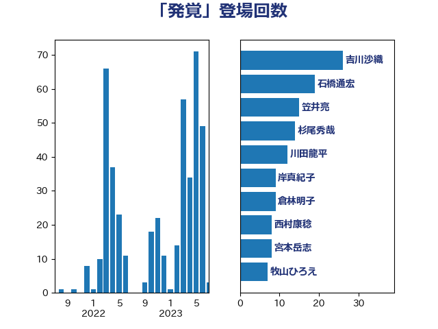

単語「発覚」

| 吉川沙織 | 立憲民主党 | 34 回 |
| 阿部知子 | 立憲民主党 | 15 回 |
| 中谷一馬 | 立憲民主党 | 6 回 |
| 岸真紀子 | 立憲民主党 | 6 回 |
| 斉藤鉄夫 | 公明党 | 6 回 |
| 伊藤孝恵 | 国民民主党 | 5 回 |
| 倉林明子 | 日本共産党 | 5 回 |
| 川田龍平 | 立憲民主党 | 5 回 |
| 東徹 | 日本維新の会 | 5 回 |
| 階猛 | 立憲民主党 | 5 回 |
| 音喜多駿 | 日本維新の会 | 5 回 |
| 伊藤岳 | 日本共産党 | 4 回 |
| 小沢雅仁 | 立憲民主党 | 4 回 |
| 小西洋之 | 立憲民主党 | 4 回 |
| 山添拓 | 日本共産党 | 4 回 |
| 市村浩一郎 | 日本維新の会 | 4 回 |
| 武田良太 | 自由民主党 | 4 回 |
| 田村まみ | 国民民主党 | 4 回 |
| 笠井亮 | 日本共産党 | 4 回 |
| 西岡秀子 | 国民民主党 | 4 回 |
| 長妻昭 | 立憲民主党 | 4 回 |
| 高橋千鶴子 | 日本共産党 | 4 回 |
| 井上哲士 | 日本共産党 | 3 回 |
| 吉良よし子 | 日本共産党 | 3 回 |
| 宮本岳志 | 日本共産党 | 3 回 |
| 岩渕友 | 日本共産党 | 3 回 |
| 柳ヶ瀬裕文 | 日本維新の会 | 3 回 |
| 森山浩行 | 立憲民主党 | 3 回 |
| 田村貴昭 | 日本共産党 | 3 回 |
| 石橋通宏 | 立憲民主党 | 3 回 |
| 福島みずほ | 社会民主党 | 3 回 |
| 菊田真紀子 | 立憲民主党 | 3 回 |
| 藤巻健太 | 日本維新の会 | 3 回 |
| 西野太亮 | 自由民主党 | 3 回 |
| 谷田川元 | 立憲民主党 | 3 回 |
| 野田国義 | 立憲民主党 | 3 回 |
| 青木愛 | 立憲民主党 | 3 回 |
| 和田政宗 | 自由民主党 | 2 回 |
| 大串博志 | 立憲民主党 | 2 回 |
| 奥下剛光 | 日本維新の会 | 2 回 |
| 山下芳生 | 日本共産党 | 2 回 |
| 山井和則 | 立憲民主党 | 2 回 |
| 斎藤嘉隆 | 立憲民主党 | 2 回 |
| 枝野幸男 | 立憲民主党 | 2 回 |
| 水岡俊一 | 立憲民主党 | 2 回 |
| 泉健太 | 立憲民主党 | 2 回 |
| 泉田裕彦 | 自由民主党 | 2 回 |
| 浅野哲 | 国民民主党 | 2 回 |
| 浦野靖人 | 日本維新の会 | 2 回 |
| 田中健 | 国民民主党 | 2 回 |
| 田名部匡代 | 立憲民主党 | 2 回 |
| 白石洋一 | 立憲民主党 | 2 回 |
| 紙智子 | 日本共産党 | 2 回 |
| 若松謙維 | 公明党 | 2 回 |
| 萩生田光一 | 自由民主党 | 2 回 |
| 野上浩太郎 | 自由民主党 | 2 回 |
| 上田清司 | 国民民主党 | 1 回 |
| 上野通子 | 自由民主党 | 1 回 |
| 下条みつ | 立憲民主党 | 1 回 |
| 中山展宏 | 自由民主党 | 1 回 |
| 中村裕之 | 自由民主党 | 1 回 |
| 中西祐介 | 自由民主党 | 1 回 |
| 井上信治 | 自由民主党 | 1 回 |
| 井坂信彦 | 立憲民主党 | 1 回 |
| 仁木博文 | 無所属 | 1 回 |
| 佐藤英道 | 公明党 | 1 回 |
| 勝部賢志 | 立憲民主党 | 1 回 |
| 古屋範子 | 公明党 | 1 回 |
| 古川元久 | 国民民主党 | 1 回 |
| 古賀之士 | 立憲民主党 | 1 回 |
| 吉川ゆうみ | 自由民主党 | 1 回 |
| 吉川元 | 立憲民主党 | 1 回 |
| 吉田とも代 | 日本維新の会 | 1 回 |
| 城井崇 | 立憲民主党 | 1 回 |
| 堀井巌 | 自由民主党 | 1 回 |
| 塩村あやか | 立憲民主党 | 1 回 |
| 塩田博昭 | 公明党 | 1 回 |
| 大石あきこ | れいわ新選組 | 1 回 |
| 大野泰正 | 自由民主党 | 1 回 |
| 奥野総一郎 | 立憲民主党 | 1 回 |
| 宮本徹 | 日本共産党 | 1 回 |
| 小宮山泰子 | 立憲民主党 | 1 回 |
| 小沼巧 | 立憲民主党 | 1 回 |
| 山下雄平 | 自由民主党 | 1 回 |
| 山崎誠 | 立憲民主党 | 1 回 |
| 山本剛正 | 日本維新の会 | 1 回 |
| 山田美樹 | 自由民主党 | 1 回 |
| 岡本あき子 | 立憲民主党 | 1 回 |
| 岬麻紀 | 日本維新の会 | 1 回 |
| 岸田文雄 | 自由民主党 | 1 回 |
| 川合孝典 | 国民民主党 | 1 回 |
| 後藤祐一 | 立憲民主党 | 1 回 |
| 打越さく良 | 立憲民主党 | 1 回 |
| 有村治子 | 自由民主党 | 1 回 |
| 末松信介 | 自由民主党 | 1 回 |
| 末松義規 | 立憲民主党 | 1 回 |
| 杉尾秀哉 | 立憲民主党 | 1 回 |
| 杉田水脈 | 自由民主党 | 1 回 |
| 松沢成文 | 日本維新の会 | 1 回 |
| 柴田巧 | 日本維新の会 | 1 回 |
| 梅谷守 | 立憲民主党 | 1 回 |
| 森屋隆 | 立憲民主党 | 1 回 |
| 榛葉賀津也 | 国民民主党 | 1 回 |
| 橘慶一郎 | 自由民主党 | 1 回 |
| 沢田良 | 日本維新の会 | 1 回 |
| 浜田聡 | NHK党 | 1 回 |
| 清水貴之 | 日本維新の会 | 1 回 |
| 渡辺猛之 | 自由民主党 | 1 回 |
| 湯原俊二 | 立憲民主党 | 1 回 |
| 源馬謙太郎 | 立憲民主党 | 1 回 |
| 滝波宏文 | 自由民主党 | 1 回 |
| 片山大介 | 日本維新の会 | 1 回 |
| 矢倉克夫 | 公明党 | 1 回 |
| 石垣のりこ | 立憲民主党 | 1 回 |
| 石川博崇 | 公明党 | 1 回 |
| 福山哲郎 | 立憲民主党 | 1 回 |
| 福島伸享 | 無所属 | 1 回 |
| 穀田恵二 | 日本共産党 | 1 回 |
| 篠原豪 | 立憲民主党 | 1 回 |
| 舩後靖彦 | れいわ新選組 | 1 回 |
| 西村智奈美 | 立憲民主党 | 1 回 |
| 赤木正幸 | 日本維新の会 | 1 回 |
| 赤澤亮正 | 自由民主党 | 1 回 |
| 赤羽一嘉 | 公明党 | 1 回 |
| 輿水恵一 | 公明党 | 1 回 |
| 辻元清美 | 立憲民主党 | 1 回 |
| 遠藤敬 | 日本維新の会 | 1 回 |
| 金子恭之 | 自由民主党 | 1 回 |
| 鈴木庸介 | 立憲民主党 | 1 回 |
| 長友慎治 | 国民民主党 | 1 回 |
| 長浜博行 | 無所属 | 1 回 |
| 青柳陽一郎 | 立憲民主党 | 1 回 |
| 高橋はるみ | 自由民主党 | 1 回 |
| 高橋光男 | 公明党 | 1 回 |
| 鬼木誠 | 立憲民主党 | 1 回 |
| 黄川田仁志 | 自由民主党 | 1 回 |